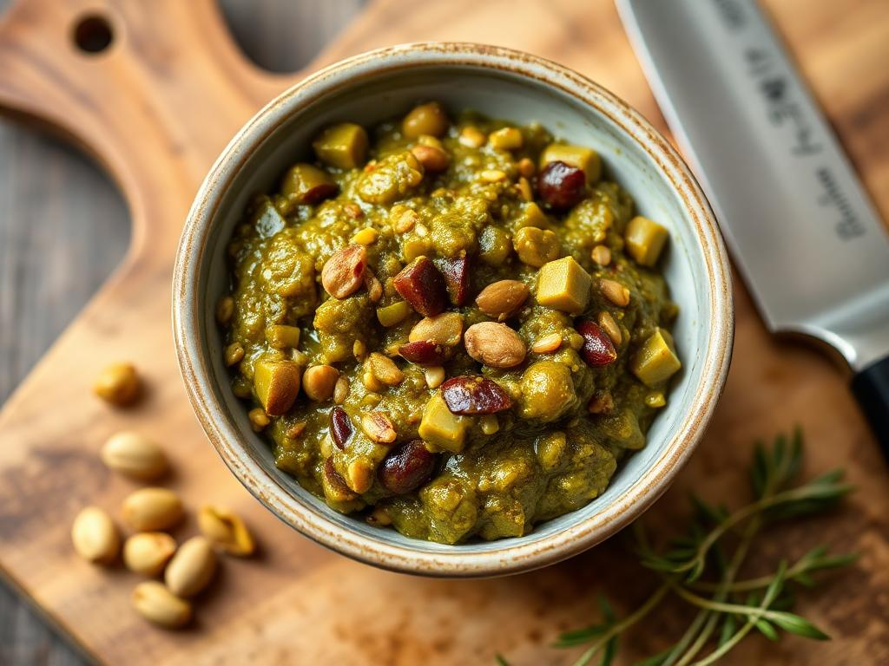

The Best Tapenade In The World
My version of an Italian classic.

Here's what you'll need:
- Green olives, 100g
- Cornichons, 25g
- Capers, 20g
- Pistachios (unsalted), 50g
- Spring onions, 1 bunch
- Mixed herbs (parsley, cilantro, mint, dill, etc.), 1 bunch
- Wholegrain mustard, 1Tbsp
- Red wine vinegar, 2Tbsp
- Olive oil, 2Tbsp
- Hot water (not boiling, around 80°C), a few splashes
- Salt & pepper to taste
- Fresh baked sourdough for serving (toasting doesn't hurt either)
And this is how you make it:
- Toast pistachio nuts in a pan while moving constantly. Alternatively, you can roast them for 10mins in 180°C oven (careful not to burn them!). Set aside to cool.
- While pistachios are resting, chop green olives, capers, cornichons and spring onions.
- Finely mince whatever herbs you are using. Mix with other prepared ingredients from the step above.
- When the nuts have sufficiently cooled off, chop them with a knife and add to the bowl with the rest of ingredients.
- Add mustard, olive oil, red wine vinegar. Mix thoroughly.
- Add some hot water, one splash at a time, to thin the mix to the consistency of your liking.
- Transfer to a serving bowl. Spread a generous amount on a slice of sourdough and enjoy!
Go back to index